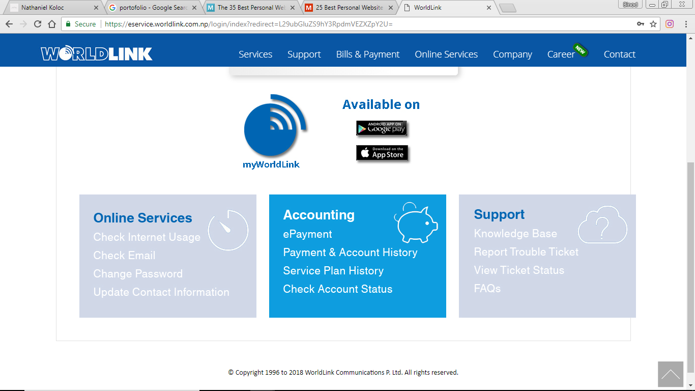
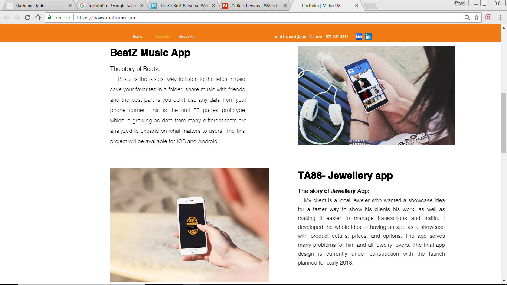
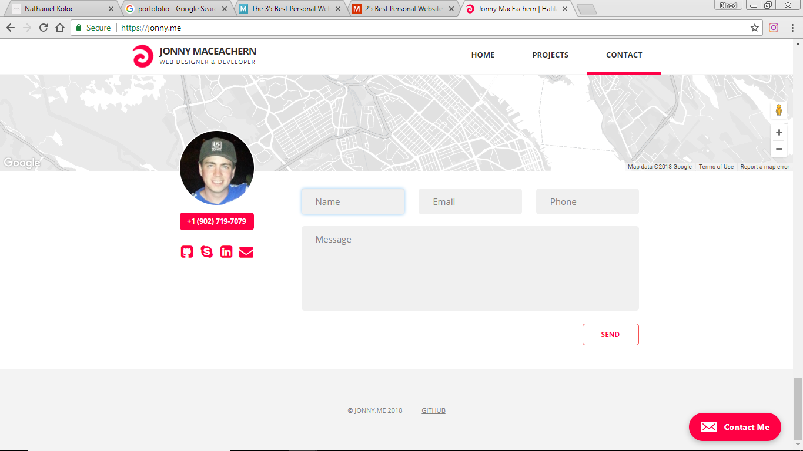
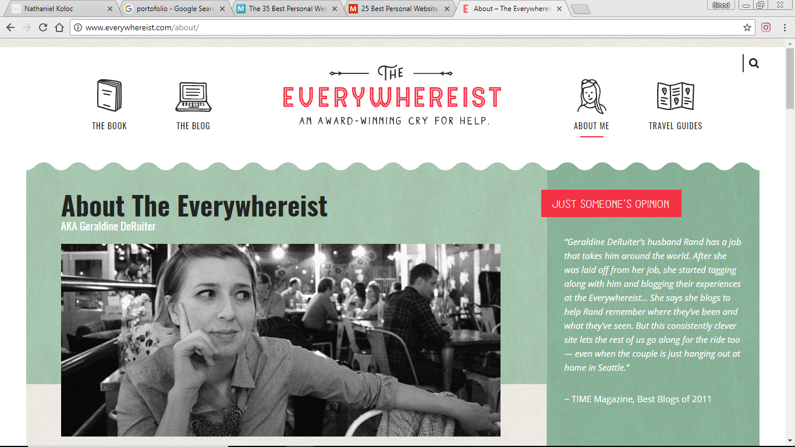

While doily research thorogh various websites nevigatio bar was taken as refrence from this website.
 The concept of adding footer was came to mind while looking through this site.
 The idea of inserting flex was discovered with this website was visited.
 while desiging the form of contectes were visited, but the idea was finalized when this website was visited.
 The idea of inserting video was taken as refrence from this website.